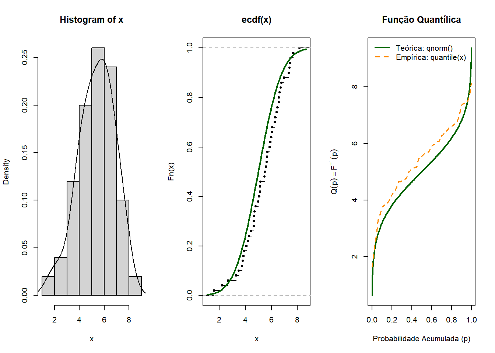
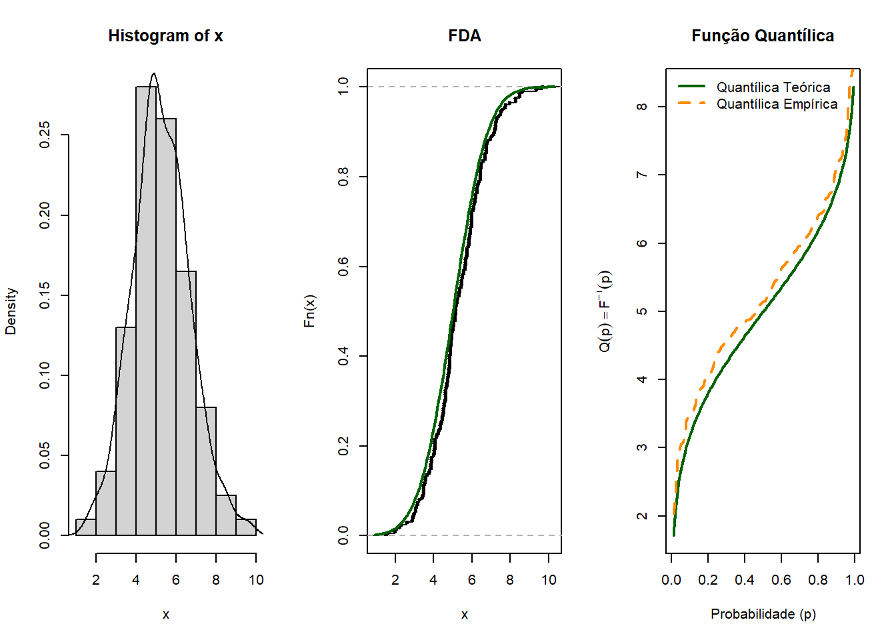
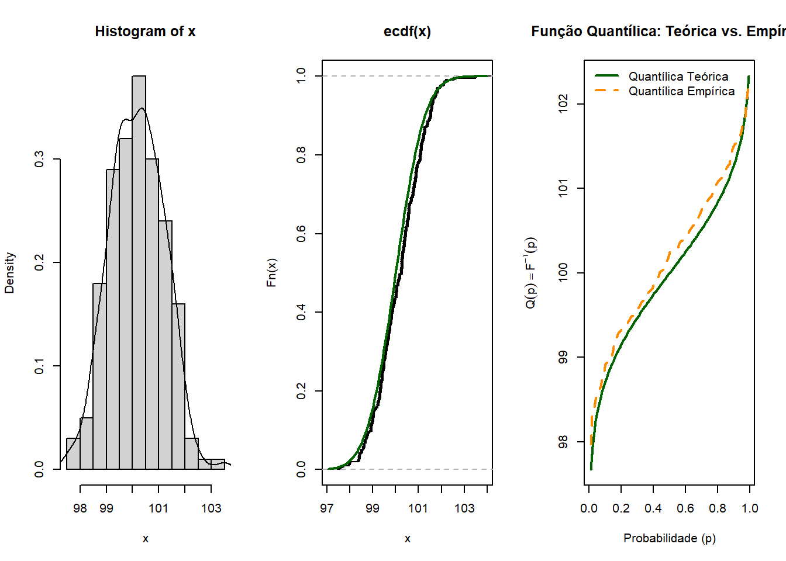
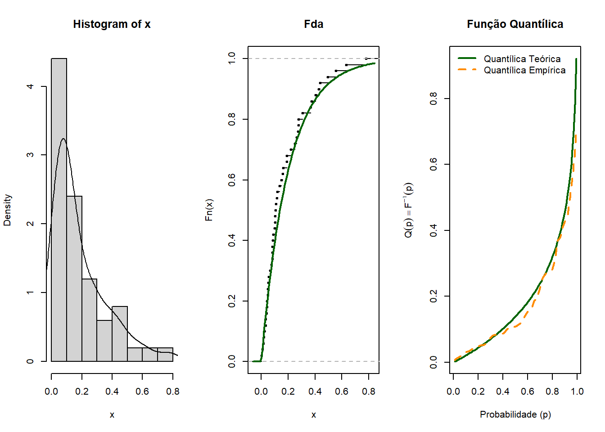
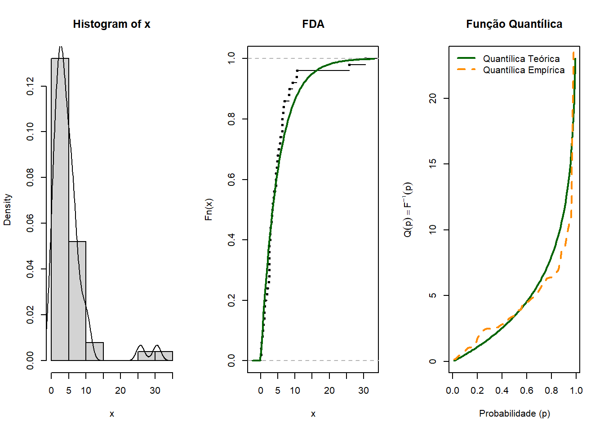
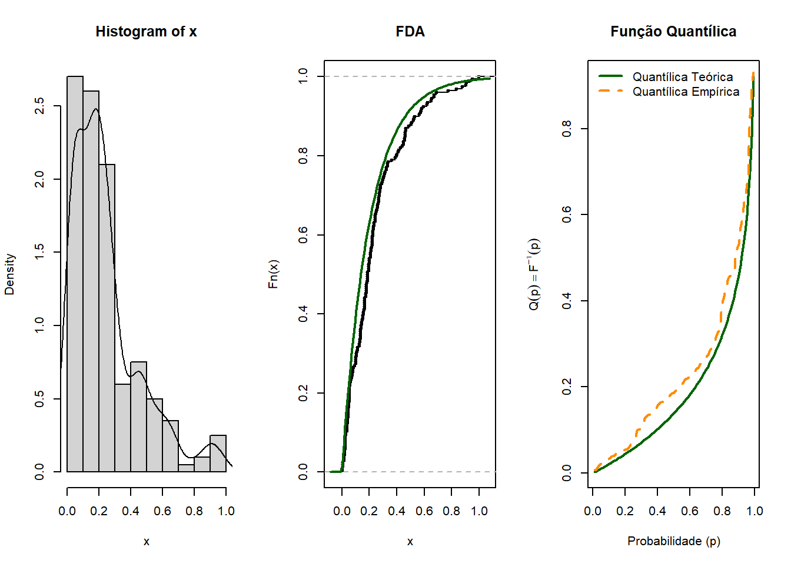
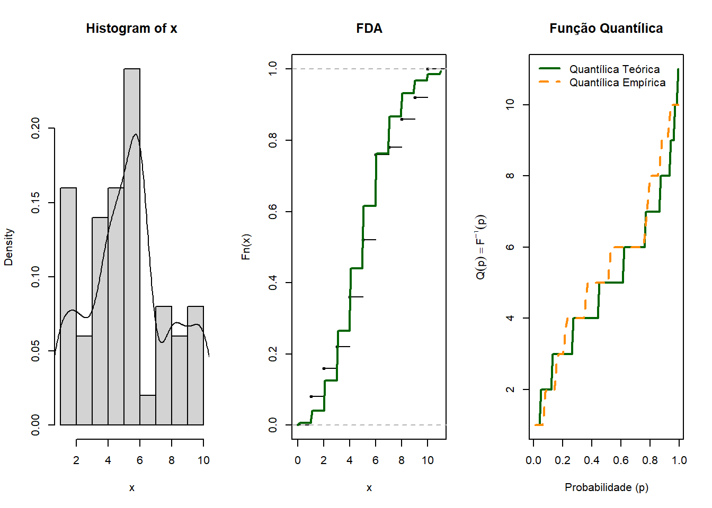
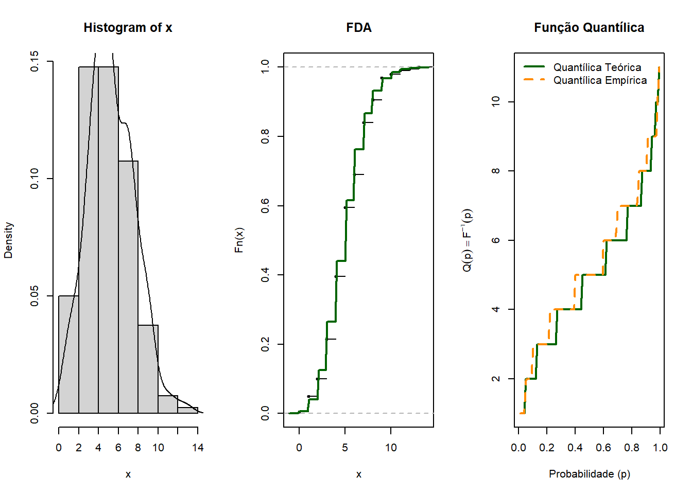

library(EMT)
library(goftest)Lista 1 Não Paramétrica
Capitulos 1 e capitulo 2
Lista de exercícios 2.1.
Apostila
1 Gere amostras das distribuições abaixo. Para cada amostra, construa 3 gráficos:
o histograma de densidade mais a função densidade de probabilidade (caso contínuo)
função distribuição (empírica e teó- rica)
função quantil (empírica e teórica).
Para as variáveis discretas, fazer apenas gráfico de barras das frequências relativas ou histograma de densidade (mais a função de probabilidade) e função distribuição (empírica e teórica).
a. X ∼ N(5, 2), n=50.

b. X ∼ N(5, 2), n=200.

c. X ∼ N(100, 1), n=50.

d. X ∼ exp(5), n=50.

e. X ∼ exp(1/5), n=50.

f. X ∼ exp(5), n=200.

g. X ∼ Poisson(5), n=50.

h. X ∼ Poisson(5), n=100.

Esse exercício nos ajudou a vizualizar um conceito que é conhecido amostras grandes se aproximam mais rápido da distribuição teórica para amostras com os mesmo parâmetros .
Lista de exercícios 2.2
Gibbons e Chakraborti (2003), Cap. 2
2.6. Se \(X\) é uma variável aleatória contínua com função densidade de probabilidade \(f_X(x) = 2(1-x)\), \(0 < x < 1\), encontre a transformação \(Y = g(X)\) tal que a variável aleatória \(Y\) tenha distribuição uniforme em \((0,2)\).
2.14. Encontre a probabilidade de que a amplitude (range) de uma amostra aleatória de tamanho \(n\) da população \(f_X(x) = 2e^{-2x}\) para \(x \geq 0\) não exceda 4.
2.24. Encontre o valor esperado da amplitude de uma amostra aleatória de tamanho 3 da distribuição uniforme.
2.25. Encontre a variância da amplitude de uma amostra aleatória de tamanho 3 da distribuição uniforme.
Lista de exercícios 2.3
Sprent e Smeeton (2007), Cap. 4
4.14. Em um programa de perguntas e respostas para crianças na televisão, um tabuleiro circular com um ponteiro vertical estacionário preso ao centro é dividido em quadrantes. O tabuleiro é girado e os participantes recebem perguntas sobre esporte, música popular, atualidades e ciência, conforme o quadrante indicado quando o tabuleiro para. Os ângulos estão marcados ao redor da borda do tabuleiro. Para dez perguntas consecutivas, os ângulos indicados quando o tabuleiro parou foram 15°, 46°, 114°, 137°, 165°, 183°, 195°, 215°, 271°, 328°. Você acha que, em média, todos os tipos de perguntas são igualmente prováveis?
Queremos avaliar se os quadrantes são equiprováveis então as Hipóteses a serem testadas são :
\[ H_0: p_i=\frac{1}{4}\\ H_i: p_i!=\frac{1}{4} \]
A primeira coisa que eu fiz foi uma tabela separando o tabuleiro em quadrantes e com os valores observados obtivemos a seguinte tabela
1º 2º 3º 4º
Observado 2 3 3 2
Esperado 4 4 4 4O teste que fiz foi o Chi-Squared de Pearson e obtive
Chi-squared test for given probabilities
data: c(2, 3, 3, 2)
X-squared = 0.4, df = 3, p-value = 0.9402Não temos evidências por esse teste para rejeitar a um nível de significância de 5% \(H_0\) já que p-valor é maior que o nível de significância .
Gibbons e Chakraborti (2003), Cap. 4
4.1. Dois tipos de milho (dourado e listrado-verde) carregam genes recessivos. Quando eles foram cruzados, obteve-se uma primeira geração consistentemente normal (nem dourada nem listrada-verde). Quando se permitiu que essa geração se autofertilizasse, foram produzidos quatro tipos distintos de plantas: normal, dourada, listrada-verde e dourada-listrada-verde. Em 1200 plantas, esse processo produziu a seguinte distribuição:
Tipo Frequência
1 Normal 670
2 Dourada 230
3 Listrada-verde 238
4 Dourada-listrada-verde 62Um monge chamado Mendel escreveu um artigo teorizando que, em uma segunda geração desses híbridos, a distribuição dos tipos de plantas deveria estar na razão 9:3:3:1. Os dados acima são consistentes com a teoria do bom monge?
Resposta : Como as variáveis que estamos querendo avaliar a distribuição de variáveis categóricas nominais vamos usar o Teste qui-quadrado as nossas hipóteses são H0: A distribuição dos milhos da segunda geração vão seguir a Razão dada pelo monge vs H1: Não seguem essas distibuição num nível de significância de 5%
p4.1 <- c(9/16,3/16,3/16,1/16)
chisq.test(x=c(670,230,238,62), p=p4.1)
Chi-squared test for given probabilities
data: c(670, 230, 238, 62)
X-squared = 3.1526, df = 3, p-value = 0.3687Note que o p-valor é menor que o nosso nível de significância o que indica que temos evidência para rejeitar a Hipótese Nula , ou seja , A distribuição dos milhos da segunda geração não segue a razão que o monge afirmou segundo esse teste
4.2. Um grupo de quatro moedas é lançado 160 vezes e os seguintes dados são obtidos:
Número de caras 0 1 2 3 4
Frequência 16 48 55 33 8Você acha que as quatro moedas são equilibradas (não viciadas)?
Uma moeda não viciada é uma moeda na qual a probabilidade de sair de cara e coroa é a mesma \(0.5\) , no contexto do problema temos 4 moedas então temos que a distribuição das moedas é dada por \(X \sim Bin(4;0.5)\) . As hipoteses para esse teste são \[ H_0: X \sim Bin(4;0.5) \text{ vs }H_1:X \nsim Bin(4;0.5) \]
Vamos fazer o teste, primeiramente nós devemos achar as probabilidades deles e ccompará-los
probs <- c(dbinom(0,4,prob = 0.5),dbinom(1,4,prob = 0.5),
dbinom(2,4,prob = 0.5),dbinom(3,4,prob = 0.5), dbinom(4,4,prob = 0.5))
chisq.test(x=c(16,48,55,33,8), p=probs)
Chi-squared test for given probabilities
data: c(16, 48, 55, 33, 8)
X-squared = 7.2417, df = 4, p-value = 0.1237O p-valor é maior que o nível de significância então não temos evidências para rejeitar a hipótese nula logo , temos evidências oara afirmar que as moedas não são viciadas .
4.21. Afirma-se que o número de erros cometidos por um digitador segue uma distribuição de Poisson com taxa média de 4 por 1000 palavras digitadas. Cem amostras aleatórias de 1000 palavras da produção desse digitador são examinadas e os números de erros são contados, conforme abaixo. Esses dados são consistentes com a afirmação?
| Nº de erros | 0 | 1 | 2 | 3 | 4 | 5 |
|---|---|---|---|---|---|---|
| Nº de amostras | 10 | 16 | 20 | 28 | 12 | 14 |
Vamos usar o teste de aderência de Chisquared de Pearson com nivel de \(5\%\) então testaremos
\[ H_0: X \sim Poisson(0.004) \text{ vs }H_1:X \nsim Poisson(0.004) \]
chisq.test(c(10,16,20,28,12,14),p=c(dpois(0:5,4/1000)))Warning in chisq.test(c(10, 16, 20, 28, 12, 14), p = c(dpois(0:5, 4/1000))):
Aproximação do qui-quadrado pode estar incorreta
Chi-squared test for given probabilities
data: c(10, 16, 20, 28, 12, 14)
X-squared = 2.3074e+14, df = 5, p-value < 2.2e-16Como p-valor é muito próximo de 0 temos evidências para rejeitar a hipótese nula, ou seja, A amostra não segue uma distribuição Poisson .
4.25. Durante um período de 50 semanas, a demanda por um certo tipo de peça de reposição para aparelhos de TV foi distribuída conforme mostrado abaixo. Encontre a distribuição teórica das demandas semanais para um modelo de Poisson com a mesma média dos dados fornecidos e realize um teste de aderência apropriado.
| Demanda semanal | Número de semanas |
|---|---|
| 0 | 28 |
| 1 | 15 |
| 2 | 6 |
| 3 | 1 |
| Mais de 3 | 0 |
| Total | 50 |
| No exercício é dito que as demandas semanais seguem uma \(\text{Poisson}\sim(0.04)\) a probabilidade teórica é dada por |
| ::: {.cell} |
| ::: |
| ## Lista de exercícios 2.4 |
| ### Conover (1999), Cap. 6, págs. 454–455: 1 a 5 |
| 1. O retorno sobre o investimento em 12 meses de 20 ações selecionadas aleatoriamente é o seguinte: |
9,1 5,0 7,3 7,4 5,5 8,6 7,0 4,3 4,7 8,0 4,0 8,5 6,4 6,1 5,8 9,5 5,2 6,7 8,3 9,2 |
| Teste a hipótese nula composta de normalidade usando o teste de Lilliefors. |
| 2. Quinze calouros ingressantes tiveram os seguintes escores de desempenho: |
481 620 642 515 740 562 395 615 596 618 525 584 540 580 598 |
| Teste a normalidade usando o teste de Lilliefors. |
| 3. Teste a hipótese do Exercício 1 usando o teste de Shapiro-Wilk. |
| 4. Teste a hipótese do Exercício 2 usando o teste de Shapiro-Wilk. |
| 5. A gerente de uma loja quis testar a hipótese de que os clientes chegavam aleatoriamente à sua loja, então registrou os tempos entre chegadas sucessivas de clientes durante uma manhã. Esses tempos (em minutos) foram os seguintes: |
3,6 6,2 12,7 14,2 38,0 3,8 10,8 6,1 10,1 22,1 4,2 4,6 1,4 3,3 8,2 |
| Teste a hipótese nula de que esses tempos entre chegadas seguem uma distribuição exponencial. |
| ### Gibbons e Chakraborti (2003), Cap. 4: 18, 19 e 26 |
| 4.18. Em um estudo de vibração, uma amostra aleatória de 15 componentes de aeronaves foi submetida a vibrações severas até apresentarem falhas estruturais. Os dados fornecidos são os tempos até a falha, em minutos. Teste a hipótese nula de que essas observações podem ser consideradas uma amostra da população exponencial com função densidade \(f(x) = e^{-x/10}/10\) para \(x \geq 0\). |
1,6 10,3 3,5 13,5 18,4 7,7 24,3 10,7 8,4 4,9 7,9 12,0 16,2 6,8 14,7 |
| 4.19. Para os dados fornecidos no Exemplo 6.1, use o teste mais apropriado para verificar se a distribuição pode ser considerada normal com média 10.000 e desvio padrão 2.000. |
| > Nota: o enunciado remete aos dados do “Exemplo 6.1” do livro; confira-os diretamente no texto. |
| 4.26. Suponha que as arrecadações mensais da entrega domiciliar do New York Times em um grande subúrbio de Nova York sejam aproximadamente normalmente distribuídas, com média US$ 150 e desvio padrão US$ 20. Uma amostra aleatória de 10 entregadores de um subúrbio vizinho é tomada; os dados ordenados das arrecadações mensais, em dólares, são: |
90, 106, 109, 117, 130, 145, 156, 170, 174, 190 |
| Teste a hipótese nula de que o mesmo modelo normal se aplica a este subúrbio, usando o teste mais apropriado. |
| ### Sprent e Smeeton (2007), Cap. 4: 1 a 4 |
| 4.1. Nos conjuntos de dados do Apêndice 1 são dadas as idades ao morrer de 21 membros do clã McGamma. Realize um teste apropriado para determinar se é razoável supor que a idade ao morrer seja normalmente distribuída para esse clã. |
| Dados (Apêndice 1, McGamma, 21 membros): |
13 13 22 26 33 33 59 72 72 72 77 78 78 80 81 82 85 85 85 86 88 |
| 4.2. A distribuição exponencial negativa com média 20 tem função de distribuição acumulada \(F(x) = 1 - e^{-x/20}\), \(0 \leq x < \infty\). Use um teste de Kolmogorov para determinar se é razoável supor que os tempos excedentes de estacionamento do Exercício 3.17 sejam uma amostra dessa distribuição. |
| Dados (Exercício 3.17). Um fiscal de estacionamento anota o tempo, em minutos, que carros ficam estacionados ilegalmente após expirar o tempo do parquímetro. Para 16 carros infratores ele registra: |
10 42 29 11 63 145 11 8 23 17 5 20 15 36 32 15 |
| 4.3. É provável que os dados de reclamações de seguros do Exercício 3.14 tenham vindo de uma distribuição normal? Teste usando o teste de Lilliefors e o teste de Shapiro–Wilk. |
| Dados (Exercício 3.14). Uma amostra aleatória de 14 reclamações de seguros britânicos de um grande lote recebido no primeiro trimestre de 2006 teve os seguintes valores (em £): |
1175 1183 1327 1581 1592 1624 1777 1924 2483 2642 2713 3419 5350 7615 |
| 4.4. Teste se os dados do Exercício 3.14 podem ter vindo de uma distribuição uniforme no intervalo (1100, 7700). |
Lista de exercícios 2.5
Conover (1999), Cap. 3, págs. 176–177: 3 a 8
3. Em uma certa cidade, a taxa de mortalidade por 100.000 habitantes devido a acidentes automobilísticos em cada um dos últimos 15 anos foi: 17,3; 17,9; 18,4; 18,1; 18,3; 19,6; 18,6; 19,2; 17,7; 20,0; 19,0; 18,8; 19,3; 20,2 e 19,9. Há alguma base para a afirmação de que a taxa de mortalidade está aumentando?
4. Para cada um dos últimos 34 anos, uma pequena faculdade do Meio-Oeste registrou as alturas médias dos calouros do sexo masculino. As médias foram: 68,3; 68,6; 68,4; 68,1; 68,4; 68,2; 68,7; 68,9; 69,0; 68,8; 69,0; 68,6; 69,2; 69,2; 68,9; 68,6; 68,6; 68,8; 69,2; 68,8; 68,7; 69,5; 68,7; 68,8; 69,4; 69,3; 69,3; 69,5; 69,5; 69,0; 69,2; 69,2; 69,1 e 69,9. Essas médias indicam uma tendência crescente na altura?
5. Um fabricante calcula o custo médio, em dólares, de produzir um certo item em cada um de 44 meses, com os seguintes resultados: 13,65; 13,41; 13,53; 13,23; 13,58; 13,43; 13,73; 13,40; 13,70; 13,58; 13,80; 13,40; 13,63; 13,69; 13,92; 13,68; 13,72; 13,42; 13,66; 13,98; 13,81; 13,60; 13,32; 13,45; 13,27; 13,26; 13,28; 13,29; 13,10; 13,09; 13,36; 13,40; 13,35; 13,53; 13,66; 13,10; 13,28; 13,33; 13,02; 13,09; 13,12; 13,16; 12,96 e 12,95. Há uma tendência estatisticamente significativa nessas médias?
6. Em um experimento para determinar a influência da sugestão, 20 linhas retas de comprimentos variados foram mostradas, uma de cada vez, aos sujeitos A e B, e os sujeitos estimaram em voz alta o comprimento de cada linha. O sujeito A declarou sua estimativa primeiro e, sem que o sujeito B soubesse, tinha instruções para superestimar as primeiras 10 linhas e subestimar as últimas 10 linhas. Depois de ouvir a estimativa do sujeito A, o sujeito B declarou a sua. Os erros das estimativas, medidos subtraindo-se os comprimentos reais das linhas dos comprimentos estimados, foram os seguintes:
| Linha | 1 | 2 | 3 | 4 | 5 | 6 | 7 | 8 | 9 | 10 |
|---|---|---|---|---|---|---|---|---|---|---|
| Erro de A | +0,3 | +1,1 | +0,9 | +0,6 | +1,0 | +1,3 | +0,8 | +1,6 | +1,2 | +0,8 |
| Erro de B | −0,1 | +0,6 | +1,0 | +0,7 | +0,2 | +0,9 | −0,1 | +0,2 | 0,0 | +0,5 |
| Linha | 11 | 12 | 13 | 14 | 15 | 16 | 17 | 18 | 19 | 20 |
|---|---|---|---|---|---|---|---|---|---|---|
| Erro de A | −1,3 | −1,1 | −1,3 | −0,7 | −1,4 | −1,1 | −0,8 | −0,5 | −1,2 | −1,0 |
| Erro de B | −0,6 | −1,2 | −1,0 | −0,7 | −1,0 | −0,1 | −0,5 | 0,0 | −0,4 | −0,3 |
Existe uma correlação positiva significativa entre os erros do sujeito A e os erros do sujeito B?
7. Um jogador da liga principal de beisebol compilou o seguinte registro ao longo de 12 anos:
| Ano | 1988 | 1989 | 1990 | 1991 | 1992 | 1993 |
|---|---|---|---|---|---|---|
| Número de home runs | 7 | 14 | 17 | 15 | 9 | 19 |
| Médias de rebatidas | 0,212 | 0,232 | 0,234 | 0,210 | 0,201 | 0,256 |
| Ano | 1994 | 1995 | 1996 | 1997 | 1998 | 1999 |
|---|---|---|---|---|---|---|
| Número de home runs | 16 | 17 | 22 | 17 | 13 | 10 |
| Médias de rebatidas | 0,261 | 0,247 | 0,255 | 0,241 | 0,238 | 0,235 |
Existe correlação significativa entre o número de home runs que ele rebateu e sua média de rebatidas naquele ano?
8. Teste os dados a seguir para verificar se há correlação significativa entre a renda anual de uma família e o número de filhos dessa família.
| Renda | Nº de filhos | Renda | Nº de filhos | Renda | Nº de filhos |
|---|---|---|---|---|---|
| $17.440 | 3 | $23.320 | 3 | $28.940 | 3 |
| 17.664 | 2 | 23.569 | 4 | 29.300 | 1 |
| 17.721 | 4 | 23.950 | 2 | 29.371 | 3 |
| 17.883 | 3 | 24.023 | 3 | 29.512 | 1 |
| 18.000 | 4 | 24.330 | 5 | 29.662 | 1 |
| 18.332 | 2 | 24.545 | 2 | 29.804 | 2 |
| 18.653 | 0 | 24.922 | 5 | 30.167 | 2 |
| 18.781 | 3 | 25.571 | 4 | 30.634 | 3 |
| 19.087 | 6 | 25.624 | 4 | 31.235 | 1 |
| 19.686 | 5 | 25.873 | 2 | 31.797 | 3 |
| 19.832 | 2 | 26.010 | 1 | 31.880 | 4 |
| 20.100 | 1 | 26.145 | 3 | 32.363 | 1 |
| 20.222 | 6 | 26.513 | 2 | 32.946 | 3 |
| 20.435 | 3 | 26.660 | 4 | 33.586 | 2 |
| 20.961 | 5 | 26.984 | 5 | 34.000 | 2 |
| 21.382 | 2 | 27.463 | 0 | 34.443 | 3 |
| 21.957 | 0 | 27.702 | 1 | 35.693 | 1 |
| 22.190 | 8 | 27.914 | 4 | 39.247 | 1 |
| 22.212 | 1 | 28.244 | 2 | 40.540 | 1 |
| 22.635 | 4 | 28.698 | 4 | 55.686 | 2 |
Sprent e Smeeton (2007), Cap. 4: 8 a 12
4.8. O periódico Biometrics (1985, 41, p. 830) fornece dados sobre o número de artigos médicos publicados anualmente nesse periódico no período 1971–81. Esses dados são estendidos abaixo para cobrir (em ordem) o período 1969–85. Há evidência de uma tendência monótona no número de artigos médicos publicados?
11 6 14 13 18 14 11 22 19 19 25 24 38 19 25 31 194.9. Os resumos meteorológicos mensais do Escritório Meteorológico do Reino Unido (UK Meteorological Office), publicados pela HMSO, fornecem as seguintes precipitações anuais em mm para 15 estações do Reino Unido durante 1978. As estações estão listadas em ordem crescente de latitude. Há evidência de uma tendência monótona na precipitação do Sul para o Norte?
Margate, 443; Kew, 598; Cheltenham, 738; Cambridge, 556; Birmingham, 729; Cromer, 646; York, 654; Carlisle, 739; Newcastle, 742; Edinburgh, 699; Callander, 1596; Dundee, 867; Aberdeen, 877; Nairn, 642; Baltasound, 1142.
4.10. Rogerson (1987) forneceu as seguintes taxas anuais de mobilidade (porcentagem da população que vive em casas diferentes no fim do ano em relação ao início) para pessoas de todas as idades nos EUA, em 28 anos consecutivos do pós-guerra. Há evidência de uma tendência monótona?
18,8 18,7 21,0 19,8 20,1 18,6 19,9 20,5 19,4 19,8
19,9 19,4 20,0 19,1 19,4 19,6 20,1 19,3 18,3 18,8
18,3 18,4 17,9 17,1 16,6 16,6 16,1 16,84.11. Um psicólogo está testando 16 candidatos a um emprego, um de cada vez. Cada um tem de realizar uma série de testes e o psicólogo atribui a cada candidato uma pontuação geral. Uma pontuação alta indica bom desempenho. Como cada candidato pode discutir os testes com candidatos posteriores antes de estes serem testados, sugere-se que os testados mais tarde podem ter uma vantagem injusta. As pontuações dos candidatos (na ordem de teste) dadas abaixo sustentam essa afirmação?
62 69 55 71 64 68 72 75 49 74 81 83 77 79 89 42Use um teste de séries (runs test) apropriado. Você considera que o teste de Cox–Stuart (Seção 3.2.3) também pode ser apropriado? Dê razões para sua decisão.
4.12. O Escritório Nacional de Estatísticas (Office for National Statistics, 1998) fornece os números de mortes por acidentes ferroviários na Inglaterra e no País de Gales de 1981 a 1996 como:
76 92 105 86 91 81 103 92
71 132 71 57 48 63 43 60Use uma forma apropriada (ou formas) do teste de séries para examinar a não aleatoriedade.
Gibbons e Chakraborti (2003), Cap. 3: 14, 15 e 18
3.14. A seguir estão 30 intervalos de tempo, em minutos, entre erupções do gêiser Old Faithful, no Parque Nacional de Yellowstone, registrados entre 8h e 22h em um certo dia, medidos do início de uma erupção ao início da seguinte:
68, 63, 66, 63, 61, 44, 60, 62, 71, 62, 62, 55, 62, 67, 73,
72, 55, 67, 68, 65, 60, 61, 71, 60, 68, 67, 72, 69, 65, 66Um pesquisador quer usar esses dados para inferência, mas está preocupado se é razoável tratá-los como uma amostra aleatória. O que você acha? Justifique sua resposta.
3.15. Em um experimento psicológico, a questão de pesquisa de interesse é se um rato “aprendeu” o caminho de um labirinto ao longo de 65 tentativas. Suponha que as observações ordenadas no tempo do número de escolhas corretas feitas pelo rato em cada tentativa sejam as seguintes:
0, 1, 2, 1, 1, 2, 3, 2, 2, 2, 1, 1, 3, 2, 1, 2, 1, 2, 2, 1, 1, 2, 2, 1, 4, 3, 1, 2, 2, 1, 2, 2,
2, 2, 3, 2, 2, 3, 4, 3, 2, 3, 3, 2, 3, 3, 2, 3, 3, 2, 3, 4, 3, 3, 4, 2, 3, 3, 4, 3, 4, 4, 4, 4Teste a aleatoriedade desses dados contra a alternativa de tendência ao agrupamento (clustering), usando o critério de dicotomização em que 0, 1 ou 2 escolhas corretas indicam ausência de aprendizado, enquanto 3 ou 4 escolhas corretas indicam aprendizado.
O teste de séries ascendentes e descendentes (runs up and down) seria apropriado para esses dados? Por quê?
3.18. Bartels (1982) ilustrou o teste de razão de von Neumann baseado em postos para aleatoriedade usando dados de variações anuais nos níveis de estoque de empresas comerciais da Austrália, de 1968–1969 a 1977–1978. Os valores (em milhões de dólares australianos), deflacionados pelo PIB australiano, são: 528, 348, 264, −20, −167, 575, 410, −4, 430, −122. Ele testou a aleatoriedade contra a alternativa de autocorrelação. Variações aleatórias nos níveis de estoque ocorrem quando as empresas são bem administradas porque as demandas futuras são antecipadas com precisão. “A autocorrelação negativa constitui evidência de uma tendência a reagir de forma exagerada a faltas ou excessos nos níveis de estoque, enquanto a autocorrelação positiva sugere que há um longo atraso para se atingir os níveis de estoque desejados.” A estatística do teste é NM = 169, que não é significativa. Compare esse resultado com o do teste de (a) séries ascendentes e descendentes, e (b) séries acima e abaixo da mediana amostral.